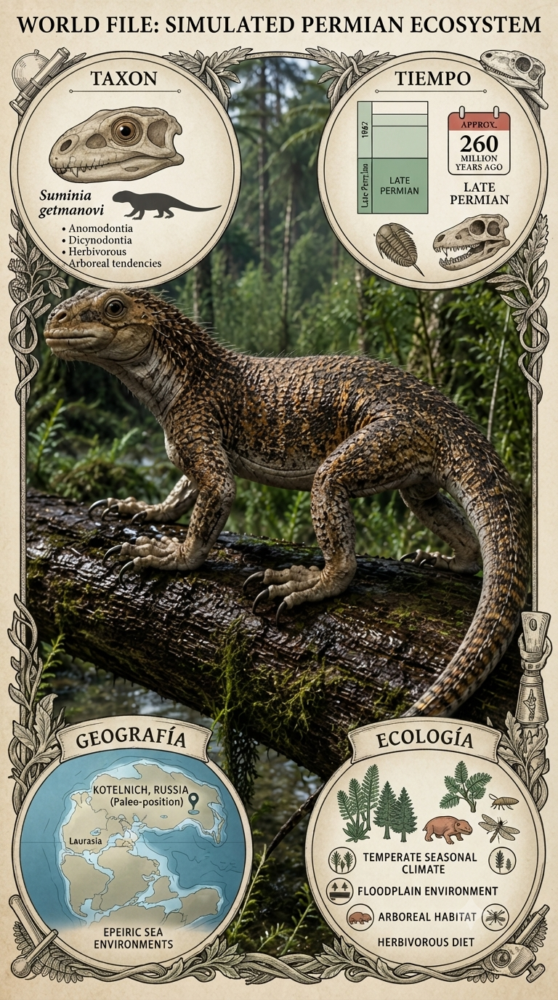
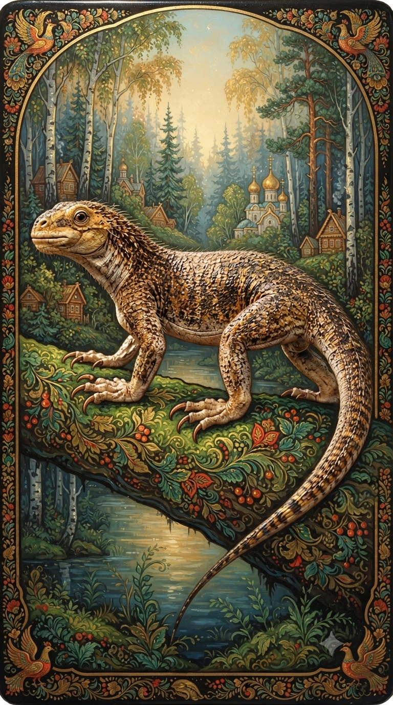
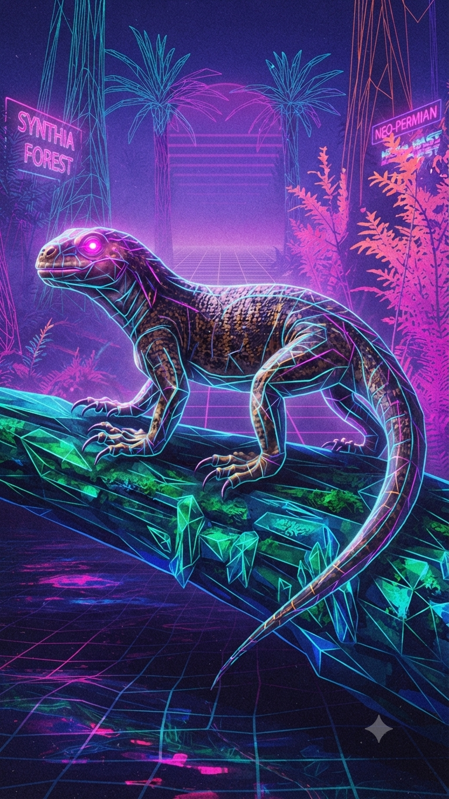

Paleoficha de PalEntropía



TAXÓN:
Suminia getmanovi
CLADO:
Anomodontia (Therapsida, Dromasauria)
DIETA:
Herbívoro especializado en el procesado de materia vegetal.
TAMAÑO:
Aproximadamente 50 cm de longitud total.
LOCOMOCIÓN:
Terrestre; adaptaciones en las falanges sugieren capacidad de agarre y hábitos semiarborícolas.
TIEMPO:
Pérmico Superior (Wuchiapingiense), aproximadamente hace 260 millones de años.
GEOGRAFÍA:
Cuenca del Volga, Rusia.
EQUIVALENCIA PALEOGEOGRÁFICA:
Regiones tropicales y subtropicales interiores del supercontinente Pangea.
AMBIENTE PALEAOECOLÓGICO:
Bosques de ribera dominados por gimnospermas y pteridófitos.
ECOLOGÍA:
• Flora: Bosques de coníferas, cicadofitas y helechos.
• Fauna secundaria: Comunidad de terápsidos y pararreptiles de la fauna de Sokolki.
• Nichos: Herbívoro de estrato medio y alto. Sus dedos prensiles sugieren que podía trepar para alimentarse de vegetación inaccesible para otros herbívoros del Pérmico.
• Relaciones: Sus filas dentales con desgaste complejo representan uno de los ejemplos más antiguos de masticación eficiente entre los sinápsidos, anticipando adaptaciones que más tarde alcanzarían los dicinodontos.
CLIMA:
Wm17 (Pérmico Superior). Clima cálido con marcada estacionalidad y una creciente tendencia hacia la aridez.
ESTADO ECOLÓGICO:
Estable. Suminia constituye una pieza clave para comprender la ocupación de nichos arborícolas en los ecosistemas del Pérmico y demuestra que algunos sinápsidos ya habían desarrollado adaptaciones anatómicas muy avanzadas para explotar recursos vegetales en altura.